Unidad 4
Contenidos de la unidad
Resultado de aprendizaje 2 · instalar sistemas operativos
Qué vas a saber hacer al terminar
Criterio a
Analizar las funciones del sistema
Explicar qué hacen el núcleo y la shell, y usar órdenes.
Criterio b
Describir su arquitectura
Explicar las piezas de Linux, su núcleo y su arranque.
Criterio c
Verificar el hardware
Comprobar si un ordenador cumple los requisitos de Ubuntu.
Criterio d
Seleccionar el sistema
Elegir una distribución según el uso, el equipo y el soporte.
Criterio e
Planificar la instalación
Decidir antes cómo se va a instalar, con sus particiones.
Criterio f
Configurar la instalación
Instalar Ubuntu a medida, con tus particiones y tu cuenta.
Criterio g
Configurar el gestor de arranque
Cambiar cómo se comporta el menú de GRUB.
Criterio h
Describir las incidencias
Reconocer los problemas de una instalación y apuntarlos.
Criterio i
Respetar las licencias
Distinguir lo libre de lo propietario en lo que instalas.
Criterio j
Actualizar el sistema
Actualizar Ubuntu en modo gráfico y desde la terminal.
Tu máquina
Ubuntu-SOM
La instalas a mano en esta unidad, con tus particiones.
Concepto clave
Linux
Linux es el núcleo de un sistema operativo libre de tipo Unix. Lo empezó Linus Torvalds en 1991 y hoy lo desarrollan miles de programadores.
Por extensión, también se llama Linux al sistema operativo completo que usa ese núcleo.
Tipo Unix: funciona como Unix, con las mismas órdenes y la misma organización de carpetas, aunque no lleva su código.
«Linux es un clon del sistema operativo Unix, escrito desde cero por Linus Torvalds con la ayuda de un grupo de programadores repartidos por la Red.» Documentación del núcleo Linux, kernel.org (traducción propia).
Qué es Linux
De Unix a Linux
CTSS · MIT
Varios usuarios comparten un ordenador por turnos.
MULTICS · MIT, General Electric y Bell Labs
Un sistema muy ambicioso para muchos usuarios a la vez.
UNIX · Bell Labs, 1969
Ken Thompson y Dennis Ritchie hacen un sistema más sencillo.
UNIX en C · 1973
Reescrito en lenguaje C, se puede llevar a otros ordenadores.
GNU · 1983
Richard Stallman empieza un sistema tipo Unix libre.
MINIX · 1987
Andrew Tanenbaum escribe un Unix pequeño para enseñar.
Linux · 1991
Linus Torvalds escribe un núcleo nuevo. Desde 1992 se publica con la licencia libre GPL.
Figura 4.1. De CTSS a Linux. Elaboración propia.
Qué es Linux
GNU y Linux: quién hizo qué
GNU
El proyecto GNU quería un sistema operativo libre de tipo Unix. Hizo las herramientas: el compilador gcc, que convierte el código en programas, la shell bash y órdenes como ls o cp. Le faltaba el núcleo.
Linux
Linux es el núcleo que faltaba. Desde 1992 se publica con la licencia GPL de GNU.
GNU + Linux = GNU/Linux, el sistema completo.
GPL. La GPL es una licencia libre con copyleft. Quien reparte el programa, cambiado o no, tiene que repartirlo con la misma licencia y con su código.
Qué es Linux
Características de Linux
Multiusuario
Varias personas tienen su cuenta en el mismo equipo, cada una con sus archivos.
Multitarea
Ejecuta muchos programas a la vez: el navegador, la música y la terminal.
Libre y de código abierto
Se puede usar, estudiar, modificar y repartir.
Tipo Unix
Sus órdenes y su árbol de carpetas son los de Unix.
Distingue mayúsculas
Notas.txt y notas.txt son dos archivos distintos.
Multiplataforma
Funciona en ordenadores, móviles, routers y supercomputadores.
Qué es Linux
Las piezas de Linux
Las aplicaciones y la shell piden al núcleo lo que necesitan.
Solo el núcleo trabaja con el hardware.
Figura 4.2. Las piezas de Linux. Elaboración propia.
Aplicaciones
El navegador, la ofimática, los juegos y el escritorio.
Shell
Lee las órdenes que escribes y las ejecuta.
Núcleo (kernel)
Reparte el procesador y la memoria, maneja los dispositivos y guarda los archivos.
Hardware
Procesador, memoria, discos, teclado y pantalla.
¿Qué pieza de Linux trabaja directamente con el hardware?
Selecciona una opción.
La terminal
La shell y la terminal
- ●Shell (intérprete de órdenes): el programa que lee lo que escribes, lo ejecuta y te enseña el resultado.
- ●Terminal: la ventana donde trabaja la shell. En Ubuntu se abre con Ctrl + Alt + T.
- ●En Ubuntu, la shell es bash. Hay otras: sh, dash, zsh, ksh, csh y tcsh.
«Bash es la shell, o intérprete del lenguaje de órdenes, del sistema operativo GNU.» Manual de referencia de Bash, gnu.org (traducción propia).
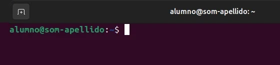
Figura 4.3. La Terminal de Ubuntu 24.04 recién abierta: la barra de título y el prompt, con un usuario y un equipo de ejemplo. Captura: elaboración propia.
La terminal de estas diapositivas es un simulador. Funciona como la de Ubuntu y puedes escribir en ella.
Hasta que instales Ubuntu-SOM, practica en el simulador o en la máquina Ubuntu que ya tienes.
La terminal
El prompt
alumno@som:~$
- alumnotu usuario.
- @se lee «en».
- somel nombre del equipo.
- :separa el nombre del equipo de la carpeta.
- ~la carpeta donde estás; ~ es tu carpeta personal.
- $eres un usuario normal. Si sale #, eres el administrador, root.
El prompt es el aviso de la shell: está lista para que escribas.
Figura 4.4. Las partes del prompt. Elaboración propia.
- Con
cd /etccambias de carpeta, y el prompt cambia:alumno@som:/etc$.
La terminal
Tus primeras órdenes
Escribe la orden y pulsa Intro. La respuesta sale debajo y vuelve el prompt.
- pwdEnseña la carpeta en la que estás, con su ruta completa.
- lsLista lo que hay en esa carpeta.
- echo Holaecho escribe en la pantalla lo que pongas detrás.
- echo $SHELL$SHELL es una variable: un nombre que guarda un dato. Aquí guarda tu shell, /bin/bash.
- cat /etc/hostnamecat enseña lo que tiene un archivo: aquí, el nombre del equipo.
- LSMayúsculas y minúsculas cuentan. LS no existe y la terminal dice que no encuentra la orden.
- Enseña la carpeta en la que estás, con su ruta completa.
- Lista lo que hay en esa carpeta.
echoescribe en la pantalla lo que pongas detrás.$SHELLes una variable: un nombre que guarda un dato. Aquí guarda tu shell,/bin/bash.catenseña lo que tiene un archivo: aquí, el nombre del equipo.- Mayúsculas y minúsculas cuentan.
LSno existe y la terminal dice que no encuentra la orden.
La terminal
Las partes de una orden
Una orden (o comando) es lo que le pides a la shell que haga.
La terminal
Las teclas que ahorran trabajo
- Escribe
ec, el principio de una orden. - Tab completa
echo. - Intro ejecuta
echosin nada detrás: sale una línea vacía. - Escribe el principio de un nombre de archivo.
- Con un Tab no se completa nada: hay más de una posibilidad.
- Hay varios archivos que empiezan así: host.conf, hostname, hosts, hosts.allow y hosts.deny.
- Añade una
n: ya solo hay un archivo que empiece así. - Tab completa
hostname. - El archivo guarda el nombre del equipo.
- ↑ vuelve la orden anterior.
- Intro la ejecuta otra vez.
pingno para solo.- Ctrl + C lo corta.
- Pantalla limpia.
La terminal
Misión: primeros pasos
La terminal
Tres formas de pedir ayuda
--help
orden --help enseña un resumen de sus opciones.
Ejemplo: ls --help.
man
man orden abre el manual completo de la orden.
Ejemplo: man ls.
help
help orden explica las órdenes que son parte de la shell.
Ejemplo: help cd.
info orden abre el manual de GNU, más largo y dividido en apartados.
Estas ayudas vienen con el sistema y funcionan sin internet.
- La ayuda es larga: sube con la rueda del ratón para ver el principio.
- Otra sinopsis:
uname [OPCIÓN]...
La terminal
--help y la sinopsis
La primera línea de la ayuda es la sinopsis: cómo se escribe la orden.
Modo de empleo: ls [OPCIÓN]... [FICHERO]...
- [ ]lo de dentro es opcional.
- ...se puede repetir.
- |una cosa o la otra.
- MAYÚSCULASlo cambias por un dato tuyo.
Se lee así: ls y, si quieres, una o varias opciones y uno o varios archivos.
La ayuda llama fichero al archivo y directorio a la carpeta.
Figura 4.5. Cómo se lee una sinopsis. Elaboración propia.
La terminal
El manual: man
Una página del manual empieza con el nombre de la orden, su sinopsis y su descripción. Después vienen las opciones, una a una.
En el simulador el manual sale en español en muchas órdenes, como man ls, y en inglés en las que no están traducidas, como man lsblk. En tu máquina Ubuntu sale en inglés hasta que instales el paquete manpages-es. La línea de abajo de man sale siempre en inglés.
- Se abre el manual de
ls. - Espacio avanza una pantalla.
- Escribe
/tamaño. - Busca la palabra: salta a
--block-size=TAMAÑO. - n va al siguiente resultado.
- q sale y vuelve el prompt.
La terminal
Buscar una orden que no conoces: man -k
Si no sabes cómo se llama la orden, man -k busca una palabra en las descripciones de todos los manuales.
Cada resultado da el nombre, la sección entre paréntesis y una descripción corta.
La sección 1 son las órdenes de los usuarios; la 8, las de administración.
- Salen
date (1)ytouch (1): sus descripciones están en español. - La descripción de
freeno está traducida: hay que buscar en inglés. Con las dos palabras entre comillas sale solofree (1): «Display amount of free and used memory in the system», la orden que enseña la memoria libre y la usada. - Salen varias órdenes y funciones;
hostname (1)es la orden. - Ya sabes su nombre: ahora, su manual. Sale en inglés porque no está traducido.
- q sale del manual y vuelve el prompt.
La terminal
Órdenes internas: type y help
Algunas órdenes no son programas: son parte de la propia shell. Se llaman órdenes internas. Muchas no tienen página de manual propia: cd, history, alias.
type dice qué es una orden: interna, alias (un nombre corto para otra orden) o un programa, con su ruta.
help explica las órdenes internas.
cd
interna
ls
alias
cat
programa
- No hay manual de
cd. - Es una orden interna.
- Su ayuda está en
help. lses un alias: Ubuntu le añade colores.cates un programa:/usr/bin/cat.
En la sinopsis ls [OPCIÓN]... [FICHERO]..., ¿qué significan los corchetes?
Selecciona una opción.
La terminal
Misión: pide ayuda
El núcleo
Un núcleo monolítico y modular
- ●Monolítico: todo el núcleo trabaja en modo núcleo, el modo del procesador con todos los permisos.
- ●Modular: muchas partes son módulos que se cargan y se descargan sin reiniciar, solo cuando hacen falta.
- ●Ejemplos de módulos: e1000 (la tarjeta de red), usbhid (teclados y ratones USB) y vboxguest (para VirtualBox).
Linux no es un núcleo híbrido: aunque esté dividido en módulos, todo lo que se carga trabaja en modo núcleo.
Figura 4.6. Un núcleo monolítico y modular: los módulos se enchufan al núcleo. Elaboración propia.
El núcleo
Los módulos cargados: lsmod
lsmod lista los módulos cargados: su nombre, su tamaño y cuántos los usan.
lsmod | grep usbhid
La barra vertical | se llama tubería: pasa lo que escribe una orden a la siguiente.
grep palabra deja pasar solo las líneas que contienen esa palabra.
- La lista es larga.
- Solo las líneas donde sale
usbhid: el módulo está cargado. - El de la tarjeta de red de la máquina virtual.
- El de VirtualBox:
vboxguest.
El núcleo
uname: qué sistema es
cat /proc/version enseña la versión del núcleo y con qué se compiló.
Cómo se lee la versión del núcleo
7.0.0-43-generic
- 7versión principal
- 0versión secundaria
- 0corrección; en Ubuntu es siempre 0
- 43revisión de Ubuntu
- genericvariante para ordenadores normales
Figura 4.7. Las partes de la versión del núcleo. Elaboración propia.
- Solo dice Linux.
- La versión del núcleo: 7.0.0-43-generic.
- Todo en una línea.
- La versión del núcleo y con qué se compiló.
- Las opciones salen en el manual.
- Escribe
/machine. - Busca la opción que da el tipo de procesador.
- q sale del manual.
El núcleo
Misión: explora el núcleo
Distribuciones
Las distribuciones más conocidas
Una distribución reúne el núcleo Linux, las herramientas GNU, un escritorio, un instalador y miles de programas listos para instalar. Un paquete es un archivo con un programa listo para instalar: cada familia tiene su formato.
Familia Debian
paquetes .deb · apt
Debian
Servidores y equipos que necesitan un sistema muy estable.
La mantiene la comunidad.
Ubuntu
Ordenadores de casa, de aula y de oficina; tiene versiones con cinco años de soporte.
La mantiene Canonical, una empresa.
Linux Mint
Ordenadores de casa; sale de Ubuntu.
La mantiene la comunidad.
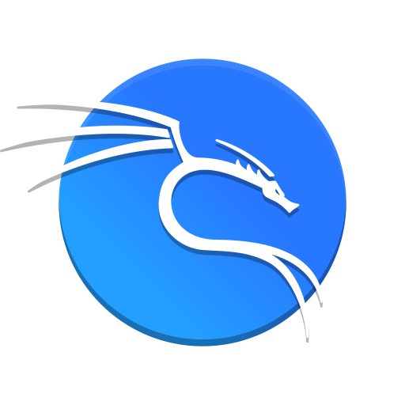
Kali
Auditorías de seguridad, normalmente en una máquina virtual.
La mantiene OffSec, una empresa.
Familia Red Hat
paquetes .rpm · dnf
Red Hat Enterprise Linux
Servidores de empresa, con soporte de pago.
La mantiene Red Hat, una empresa.
Fedora
Probar antes que nadie lo que después llega a Red Hat Enterprise Linux.
La mantiene la comunidad, con el apoyo de Red Hat.
Familia Arch
paquetes de pacman
Arch
Montar el sistema pieza a pieza, a tu gusto.
La mantiene la comunidad.
Manjaro
Arch ya montado, con escritorio y listo para usar.
La mantiene la comunidad y una empresa.
Figura 4.8. Logotipos de Wikimedia Commons: Debian (Debian, CC BY-SA 3.0), Ubuntu (Canonical, GPLv3), Linux Mint (Clement Lefebvre, CC BY 3.0), Kali (Abiss21, CC BY-SA 4.0), Arch Linux (Judd Vinet, Aaron Griffin y Levente Polyák, GPL); Red Hat, Fedora y Manjaro, de dominio público. Son marcas de sus respectivos proyectos y se usan para identificarlos.
Distribuciones
Ubuntu: versiones y soporte
24.04
LTS
Ediciones: Desktop, con escritorio, y Server, sin escritorio.
Figura 4.9. Soporte de la 24.04 LTS y de dos versiones de nueve meses. Elaboración propia.
- ●El número de versión es el año y el mes: la 24.04 salió en abril de 2024.
- ●Sale una versión cada seis meses, con nueve meses de soporte.
- ●Cada dos años, en abril, sale una LTS (Long Term Support, soporte a largo plazo), con cinco años de actualizaciones. La 24.04 las recibe hasta mayo de 2029.
- ●Las versiones puntuales (24.04.1, 24.04.2…) reúnen las actualizaciones. La última es la 24.04.5.
Distribuciones
Elegir el sistema operativo
Para qué se usará: estudiar, una oficina, un servidor o un equipo antiguo.
Qué hardware tiene: procesador, memoria y disco.
Cuánto soporte necesita: una LTS, si tiene que durar años.
Qué programas necesita el usuario, y si existen para Linux.
Licencia y coste: libre y gratuita, o con soporte de pago.
Ejemplo. Un aula con ordenadores de 8 GB: Ubuntu 24.04 LTS. Es libre, tiene cinco años de soporte y trae los programas del curso.
Distribuciones
Libre y no libre en Ubuntu
Los programas de Ubuntu vienen de sus repositorios: servidores en internet con miles de paquetes. Casi todos son libres, pero también hay programas propietarios.
Programas libres
Se pueden usar, estudiar, cambiar y repartir. Su código está a la vista.
Ejemplo: LibreOffice, el paquete de oficina.
Programas propietarios
Tienen dueño y condiciones de uso. Su código no se puede ver ni cambiar.
Ejemplo: el controlador de las tarjetas gráficas NVIDIA.
Una licencia es el permiso para usar un programa con unas condiciones. Respetarla empieza por saber qué se instala.

Pregunta a la clase
¿Puede una empresa instalar Ubuntu en sus 30 ordenadores sin pagar?
La respuesta
Sí. Sus licencias libres, como la GPL, permiten usarlo, copiarlo y repartirlo sin pagar. La empresa puede contratar soporte si lo quiere.
Los programas propietarios que instale encima siguen su propia licencia, y esos sí pueden costar dinero.
Planificar la instalación
El plan de instalación
Un plan de instalación es el documento con todas las decisiones, escrito antes de empezar.
Sistema
Qué sistema y qué versión se instalan, y por qué.
Equipo
Si el equipo cumple los requisitos.
Forma de instalar
Si se borra el disco, se instala junto a otro sistema o se hace de forma automatizada.
Particiones
Los trozos en que se divide el disco: cuántos, de qué tamaño y para qué.
Parámetros
El idioma, el teclado, el usuario, el nombre del equipo y el huso horario.
Antes y después
Antes, la copia de los datos; después, actualizar y hacer una instantánea.
Licencias
Qué programas propietarios se van a instalar y con qué condiciones.
Planificar la instalación
El medio de instalación
- ●La imagen ISO es un archivo con todo el sistema listo para instalar. Se descarga de ubuntu.com junto con su suma de comprobación (SHA-256): si la suma de tu archivo coincide, ha bajado bien.
- ●Con la ISO se prepara un USB de arranque con un programa de grabación, por ejemplo, Rufus. Se borra todo lo que tenía el USB.
- ●Se arranca el equipo desde el USB, eligiéndolo en el menú de arranque del firmware.
- ●Para probar Ubuntu sin instalarlo, se elige Try or Install Ubuntu y, cuando sale el instalador, se cierra: queda un Ubuntu de prueba.
- ●En una máquina virtual no hace falta USB: la ISO se pone en el lector virtual y hace su papel.
La imagen ISO
un archivo: ubuntu-24.04.5.1-desktop-amd64.iso
El USB de arranque
se graba con la ISO
El equipo
arranca desde el USB e instala Ubuntu
Figura 4.10. Del archivo ISO al equipo: el medio de instalación. Elaboración propia.
Planificar la instalación
¿Sirve este ordenador?
Algunas tarjetas de wifi y gráficas necesitan controladores propietarios. Se comprueba arrancando Ubuntu desde el USB, sin instalarlo.
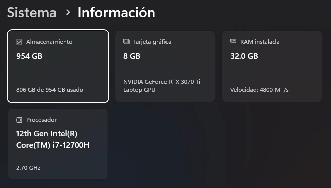
Figura 4.11. Configuración › Sistema › Información en Windows 11: el disco, la tarjeta gráfica, la memoria y el procesador. Captura: elaboración propia.
Planificar la instalación
Discos y particiones en Linux
Una partición es un trozo del disco que se usa como si fuera un disco aparte.
Linux trata cada disco como un archivo de la carpeta /dev.
- /dev/sdael primer disco SATA. El disco de VirtualBox también se llama así.
- /dev/sda1, /dev/sda2…sus particiones.
- /dev/nvme0n1 y /dev/nvme0n1p1un disco NVMe y su primera partición.
Windows da una letra a cada partición: C:, D:. Linux no usa letras: cada partición se ve dentro de una carpeta, su punto de montaje.
Figura 4.12. El disco sda, sus particiones y dónde se ve cada una. Elaboración propia.
Planificar la instalación
Las particiones de Ubuntu-SOM
Con /home aparte, reinstalar el sistema no borra los archivos de los usuarios.
Por defecto, Ubuntu no crea partición de intercambio: usa un archivo, /swap.img.
Planificar la instalación
Reparte el disco
- Arrastra los bordes para cambiar el tamaño de cada partición.
- Pulsa una partición para ver para qué sirve y qué pasa si falta.
En un equipo con UEFI, ¿qué partición es imprescindible para arrancar?
Selecciona una opción.
Planificar la instalación
El plan de Ubuntu-SOM
Sistema
Ubuntu 24.04.5 LTS Desktop: es libre y tiene soporte hasta mayo de 2029.
Equipo
Sirve: 2 procesadores de 64 bits, 4 GB de memoria, 40 GB de disco y UEFI.
Forma de instalar
Una máquina virtual nueva, con el disco vacío y la Instalación manual.
Particiones
ESP de 1 GB (la crea el instalador), raíz de 25 GB, intercambio de 2 GB y /home con el resto.
Parámetros
Español; usuario, tu nombre; equipo, som-apellido; huso horario, Europe/Madrid.
Antes y después
Antes, nada. Después, Guest Additions, actualizar, manual en español, «Nunca» e instantánea.
Licencias
«Optimice el equipo» sin marcar: no se instalan controladores ni códecs propietarios.
Instalar Ubuntu a medida
La máquina Ubuntu-SOM
En VirtualBox, pulsa Nueva:
- 1Nombre Ubuntu-SOM, la carpeta C:\VM\apellido-nombre y la ISO de Ubuntu 24.04.5.
- 2Desmarca Proceed with Unattended Installation: la instalación la haces tú. Después, en OS Version, elige Ubuntu 24.04 LTS.
- 3Base Memory, 4096 MB, y 2 procesadores.
- 4Marca Use EFI: la máquina arranca con UEFI, como un PC actual.
- 5Disco VDI nuevo de 40 GB, dinámico.
La red NAT ya viene puesta.
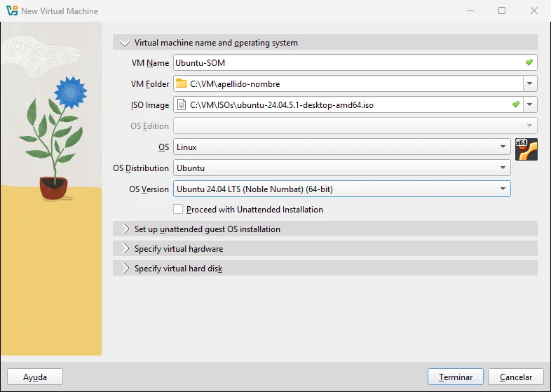
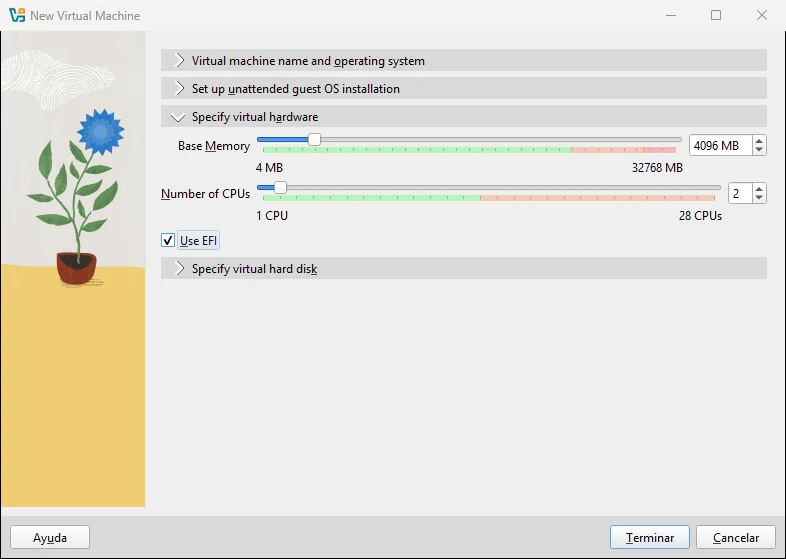
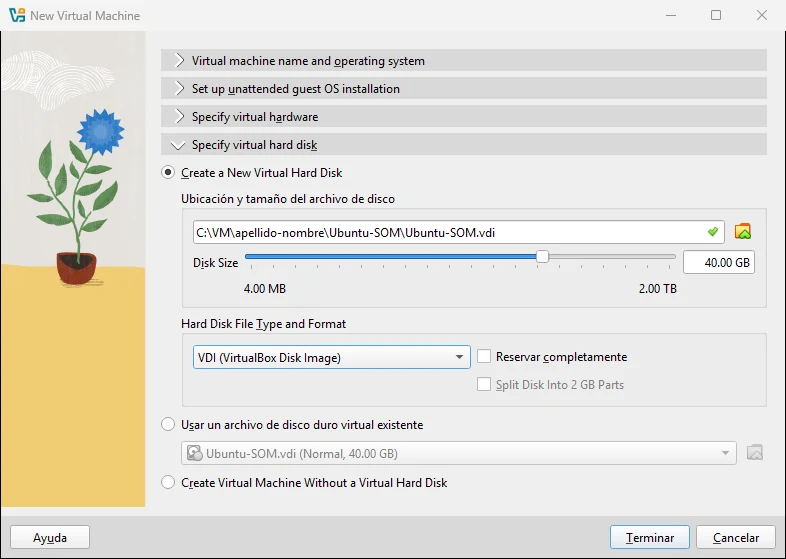
Instalar Ubuntu a medida
Del arranque al disco
- 1Try or Install Ubuntu.
- 2Elige Español. En accesibilidad, teclado y red, pulsa Siguiente.
- 3Actualización disponible: pulsa Actualizar ahora. Después, cierra el instalador y ábrelo otra vez.
- 4Instalación interactiva y Selección predeterminada.
- 5Optimice el equipo: las dos casillas sin marcar. Instalan programas propietarios que la máquina virtual no necesita.
- 6Configuración del disco: Instalación manual.
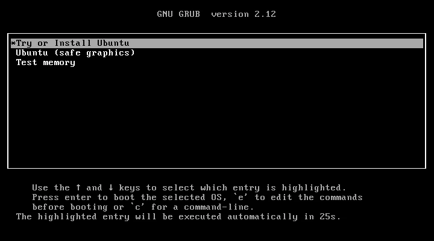
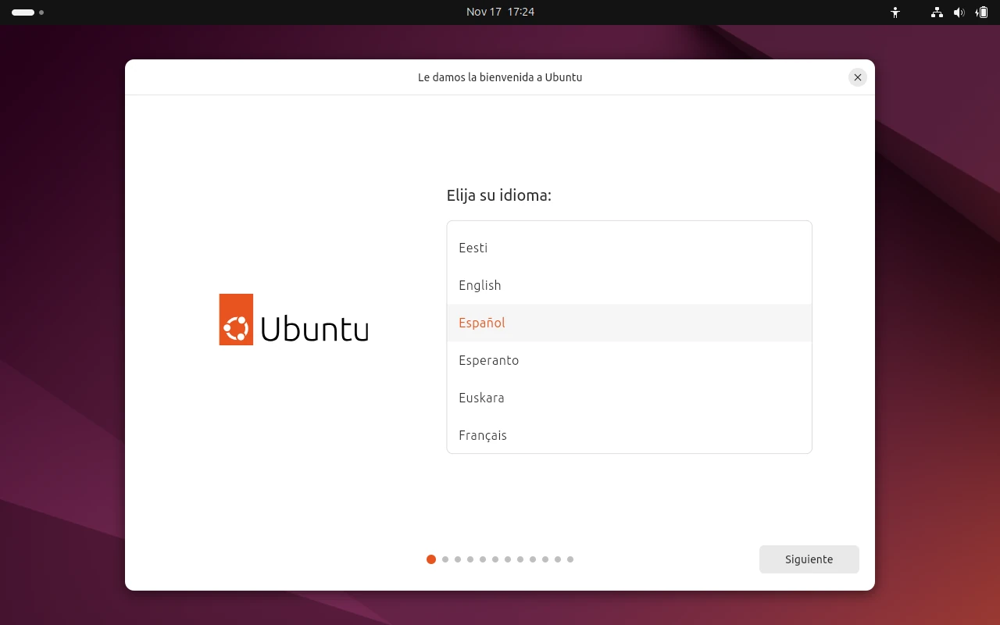
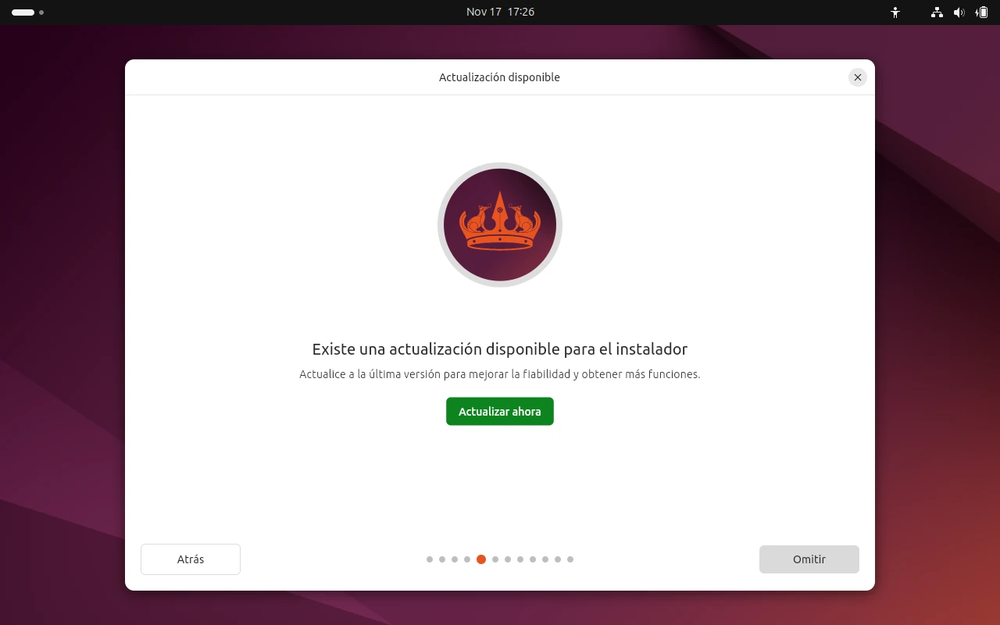
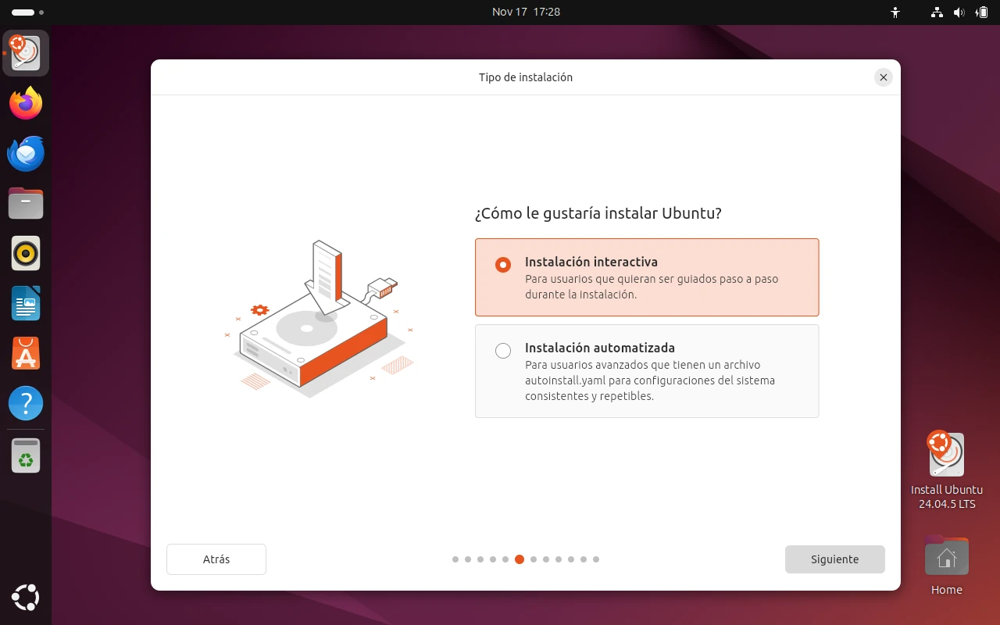
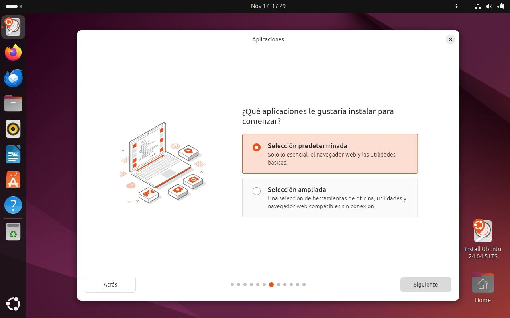
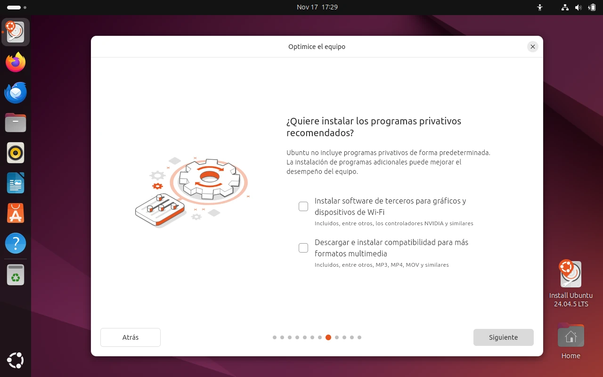
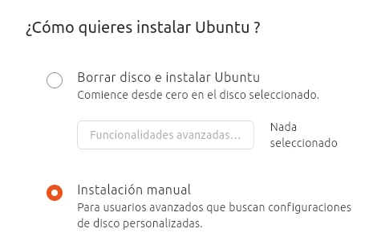
Instalar Ubuntu a medida
Instalación manual: crear las particiones
- 1En Dispositivo donde instalar el cargador de arranque, elige sda. El instalador crea sola la ESP: sda1, en /boot/efi.
- 2Selecciona Espacio libre y pulsa +. Cambia la unidad a GB, escribe 25, deja Ext4 y elige el punto de montaje /.
- 3Otra vez Espacio libre y +: 2 GB y, en Utilizada como, Swap.
- 4Otra vez Espacio libre y +: deja el tamaño que propone, que es el resto, con Ext4 y el punto de montaje /home.
- 5Comprueba la tabla y pulsa Siguiente.
Hasta que pulses Instalar, no se escribe nada en el disco.
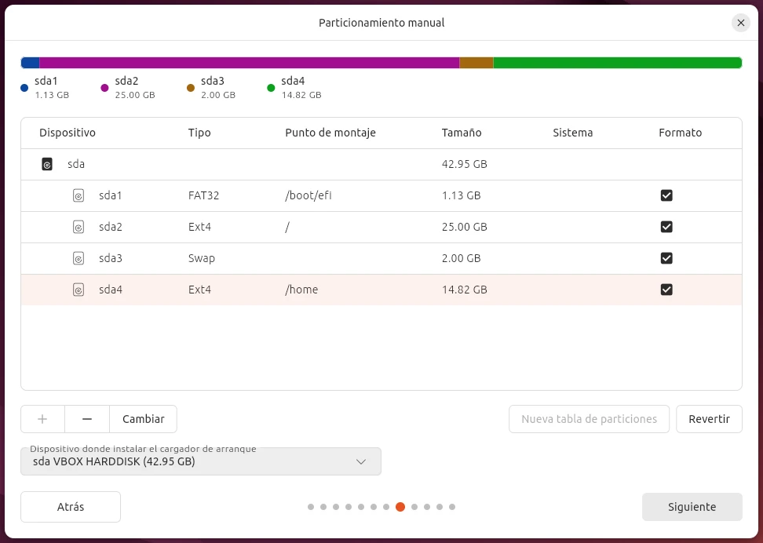
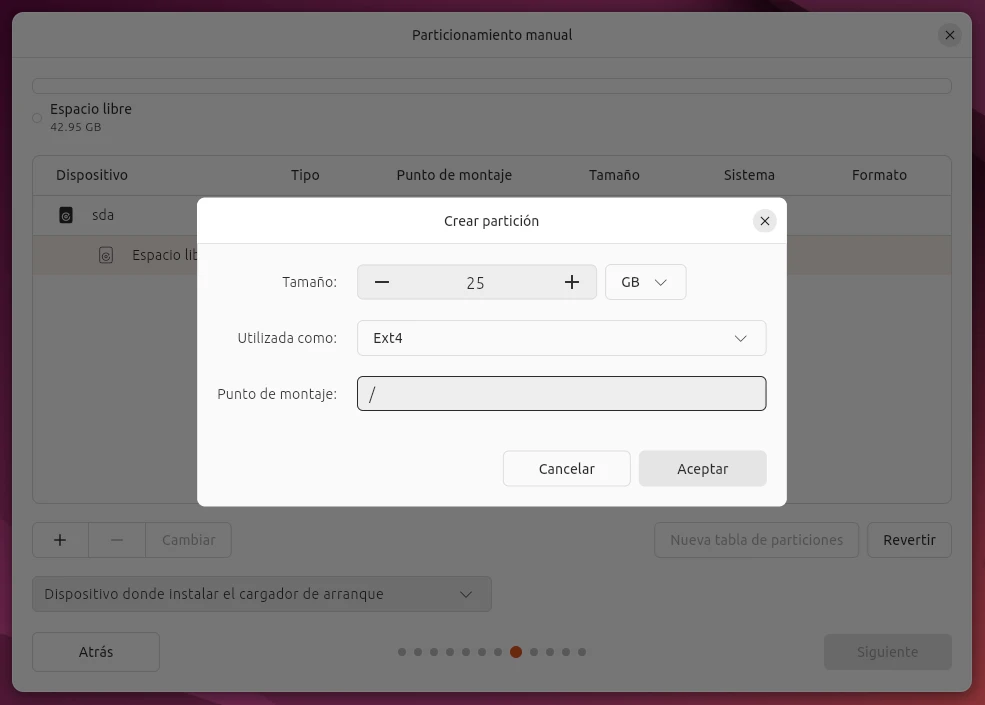
Instalar Ubuntu a medida
De la cuenta al primer inicio
- 1Cree su cuenta: tu nombre; el equipo, som-apellido; el usuario, tu nombre en minúsculas y sin tildes.
- 2Huso horario: Madrid (Madrid, Spain).
- 3Revise sus elecciones: comprueba las cuatro particiones y pulsa Instalar.
- 4Reiniciar ahora y, cuando lo pida, Intro.
- 5Al entrar, Ubuntu ofrece la versión 26.04: pulsa No actualizar.
- 6Instala las Guest Additions para que la pantalla se ajuste a la ventana.
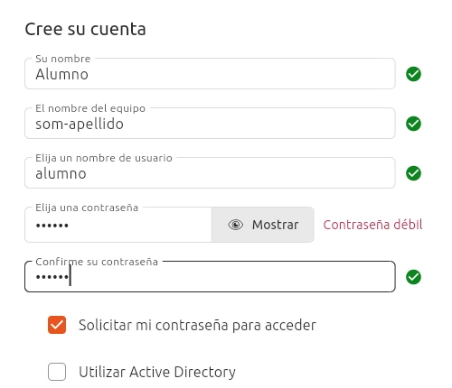

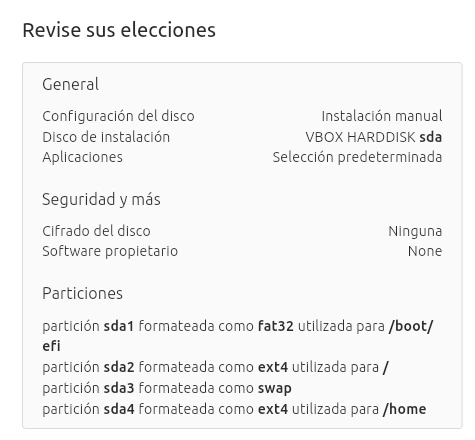
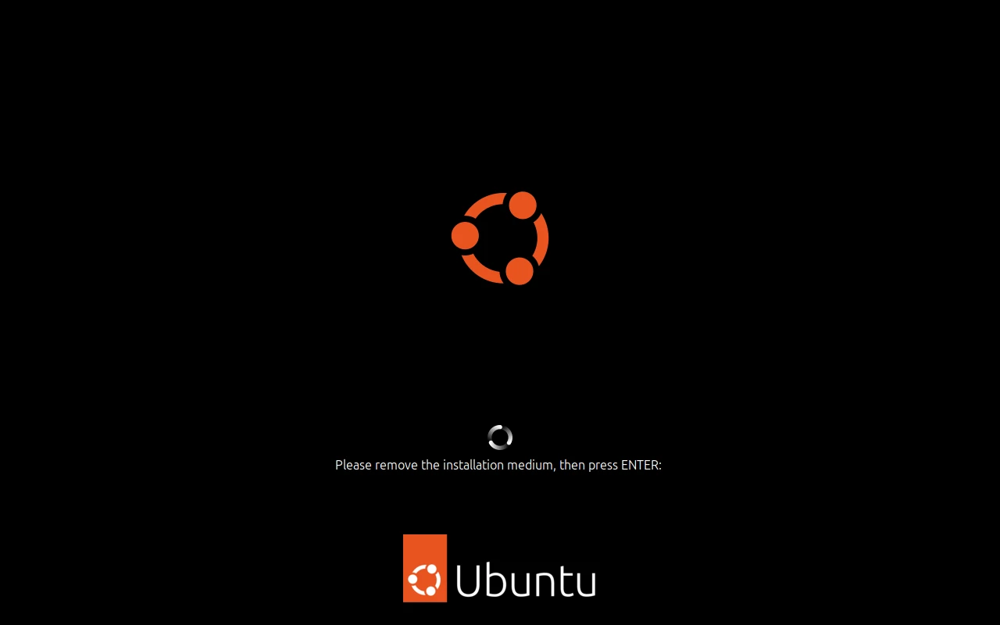
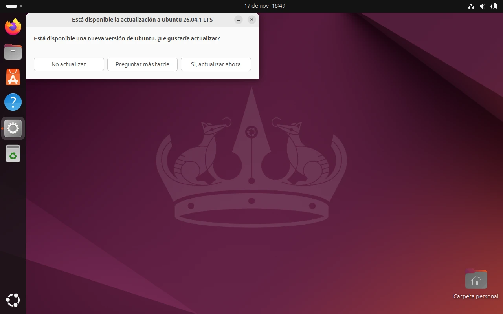

Instalar Ubuntu a medida
Instalación automatizada
- ●La instalación automatizada instala Ubuntu sin hacer preguntas: las respuestas ya están escritas.
- ●Las respuestas van en un archivo, autoinstall.yaml: idioma, teclado, disco, usuario y programas.
- ●Sirve para instalar muchos equipos iguales, por ejemplo, los treinta de un aula.
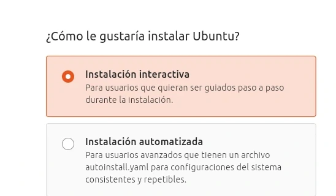
Figura 4.31. «Tipo de instalación»: la segunda opción es la automatizada, con un archivo autoinstall.yaml. Captura: elaboración propia.
Instalar Ubuntu a medida
Comprobar la instalación
Comprueba que el disco ha quedado como decía el plan.
- lsblkLista los discos y sus particiones, con su tamaño y su punto de montaje.
- sda es el disco; de sda1 a sda4, las particiones del plan; [SWAP] es el intercambio.
- Las líneas loop son programas snap: un formato de paquete de Ubuntu en el que cada programa viene en un archivo que se monta como un disco pequeño. No son particiones.
- El instalador y lsblk no miden igual: por eso los 25 GB del plan salen en lsblk como 23,3G.
- uname -rLa versión del núcleo instalado.
- ip aLa dirección IP: en NAT, 10.0.2.15.
- Lista los discos y sus particiones, con su tamaño y su punto de montaje.
sdaes el disco; desda1asda4, las particiones del plan;[SWAP]es el intercambio. Las líneasloopson programas snap: un formato de paquete de Ubuntu en el que cada programa viene en un archivo que se monta como un disco pequeño. No son particiones. El instalador ylsblkno miden igual: por eso los 25 GB del plan salen como 23,3G. - La versión del núcleo instalado.
- La dirección IP: en NAT, 10.0.2.15.
Instalar Ubuntu a medida
Actualizar el sistema
Actualizar es instalar las versiones nuevas de los programas que ya tienes. Corrigen errores y fallos de seguridad.
- 1Abre el Actualizador de software, o espera a que avise él solo.
- 2Pulsa Instalar ahora y escribe tu contraseña.
- 3Si lo pide, reinicia: pasa cuando se actualiza el núcleo.
- 4En Programas y actualizaciones › Actualizaciones, elige Notificarme una versión nueva de Ubuntu: Nunca.
Instalar las actualizaciones no cambia de versión. Pasar de la 24.04 a la 26.04 es otra cosa, aunque Ubuntu también lo llame actualizar. La 26.04 necesita 6 GB de memoria y la máquina tiene 4 GB.
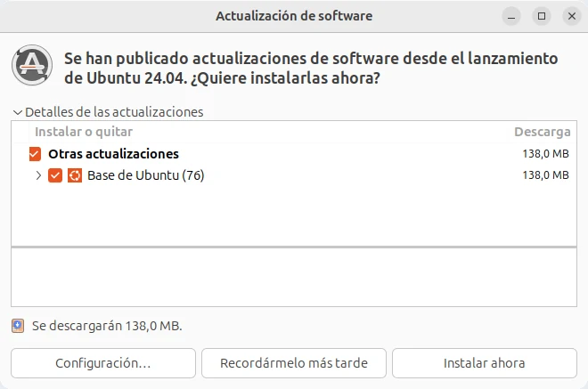
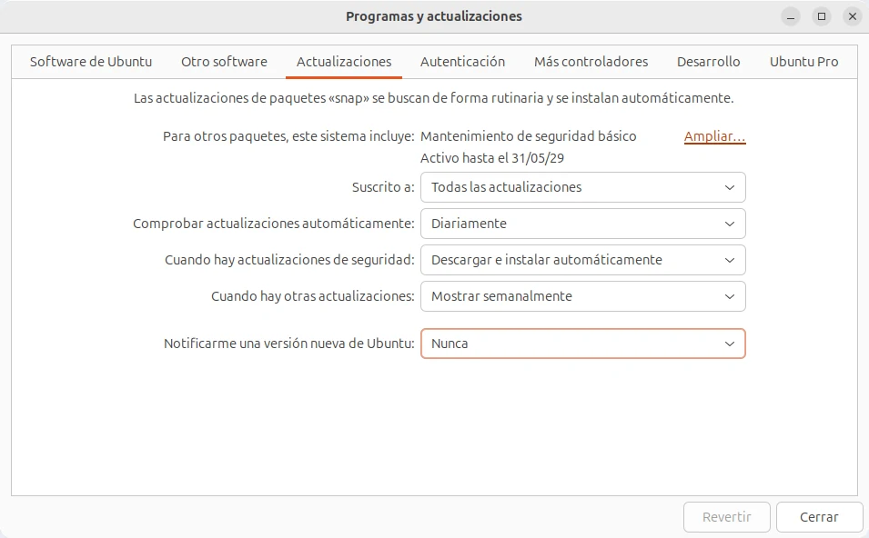
Instalar Ubuntu a medida
Actualizar desde la terminal: sudo y apt
sudo delante de una orden la ejecuta como administrador. Pide tu contraseña, que no se ve mientras la escribes.
apt es el gestor de paquetes de Ubuntu: instala, actualiza y quita programas de los repositorios.
- sudo apt updateDescarga la lista actualizada de los paquetes disponibles. No instala nada.
- sudo apt upgradeInstala las versiones nuevas. Intro es sí a la pregunta ¿Desea continuar? [S/n].
- sudo apt install paqueteInstala un programa. Ejemplo: el manual en español, manpages-es.
- sudo apt remove paqueteQuita un programa.
- Pide la contraseña:
[sudo] contraseña para alumno. - Escribe la contraseña,
alumno. No se ve mientras la escribes. - Descarga la lista actualizada de los paquetes disponibles. No instala nada.
- Lista lo que va a cambiar y pregunta.
- Intro es sí: instala las versiones nuevas.
- Instala el manual en español. Ya no pide la contraseña: sudo la recuerda unos minutos.
- Ahora el manual sale en español.
- q sale del manual y vuelve el prompt.
Instalar Ubuntu a medida
Incidencias de la instalación
Una incidencia se apunta: qué pasó, qué hiciste y cómo acabó.
Instalar Ubuntu a medida
Misión: la máquina recién instalada
Instalación personalizada
Instala tu máquina Ubuntu-SOM con el plan de la unidad.
- 1Crea la máquina: UEFI, 4 GB, 2 procesadores, 40 GB.
- 2Instala con Instalación manual: raíz, intercambio y /home. La ESP la crea el instalador.
- 3Pon el usuario, el equipo, el idioma y el huso horario de la sección 4.6.
- 4Instala las Guest Additions.
- 5Comprueba las particiones con lsblk.
- 6Actualiza el sistema, instala el manual en español y elige Notificarme una versión nueva: Nunca.
- 7Haz la instantánea UT4 instalada.
- 8Apunta tus incidencias, como en el ejemplo.
Ejemplo de parte de incidencia
Fecha
17 de noviembre, a las 18:58.
Máquina
Ubuntu-SOM, recién instalada.
Qué pasó
El escritorio no se ajusta a la ventana de VirtualBox y salen barras de desplazamiento.
Causa probable
Faltan las Guest Additions.
Qué hice
Inserté el CD de las Guest Additions, instalé gcc, make y bzip2, ejecuté VBoxLinuxAdditions.run y reinicié.
Cómo acabó
Resuelta: la pantalla ya se ajusta.
Concepto clave
Gestor de arranque
El programa que arranca el sistema operativo. El firmware lo pone en marcha; él carga el núcleo y le pasa el control.
- ●Si hay varios sistemas, enseña un menú para elegir.
- ●Ubuntu usa GRUB 2 (GRand Unified Bootloader). Con UEFI, GRUB se guarda en la ESP.
- ●Aquí, gestor de arranque y cargador de arranque son lo mismo.
- ●En Ubuntu-SOM el menú está oculto: se ve pulsando Esc al encender.
«[…] Se encarga de cargar el núcleo del sistema operativo y de pasarle el control.» Manual de GNU GRUB, gnu.org (traducción propia).
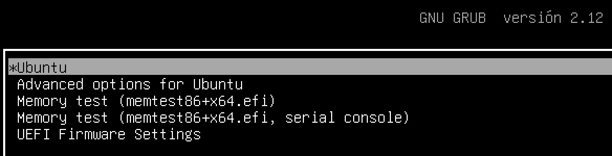
Figura 4.34. El menú de GRUB de Ubuntu-SOM después de pulsar Esc: la cabecera «GNU GRUB versión 2.12» y sus cinco entradas. Captura: elaboración propia.
El arranque
Del firmware al escritorio
UEFI → GRUB → núcleo e initrd → systemd → gdm3 → tu escritorio
Pregunta a la clase
Has instalado Ubuntu en un PC y no arranca. ¿Qué miras, por orden?
- 1¿El firmware arranca desde el disco correcto?
- 2¿Sale el menú para elegir el sistema?
- 3¿Arranca el núcleo o se queda la pantalla negra?
- 4¿Llega al inicio de sesión?
Cada paso que funciona descarta una causa.
El arranque
Configurar GRUB: /etc/default/grub
El comentario dice: «Si cambias este archivo, ejecuta después update-grub para actualizar /boot/grub/grub.cfg».
Figura 4.35. Las líneas de /etc/default/grub que cambian el menú. Pulsa o pasa el ratón por cada explicación para ver su línea. Elaboración propia.
- 1
GRUB_DEFAULT
la entrada que arranca sola; 0 es la primera.
- 2
GRUB_TIMEOUT_STYLE
hidden oculta el menú; menu lo enseña.
- 3
GRUB_TIMEOUT
los segundos que espera.
- 4
GRUB_CMDLINE_LINUX_DEFAULT
quiet: sin mensajes. splash: con logotipo. Sin ellos, se ven los mensajes del arranque.
Este archivo no es el menú. El menú es /boot/grub/grub.cfg, y se fabrica con sudo update-grub.
El arranque
Cambiar la configuración: nano y update-grub
nano es un editor de texto que funciona dentro de la terminal. Abajo enseña sus atajos: ^ significa Ctrl. En el navegador, Ctrl + W cierra la pestaña: en el simulador, busca con F6.
sudo, porque es un archivo del sistema.- Escribe la contraseña,
alumno. - Se abre nano con el archivo. Abajo están sus atajos.
- En nano se busca con Ctrl + W, pero en el navegador esa tecla cierra la pestaña: aquí, F6.
- Escribe la palabra que buscas:
TIMEOUT. - El cursor salta a la línea de
GRUB_TIMEOUT_STYLE. - Ctrl + K corta la línea con
hidden. - Escribe la línea nueva:
menuen lugar dehidden. - Intro termina la línea.
- Ctrl + K corta la línea de
GRUB_TIMEOUT=0. - Escribe la línea nueva: 5 segundos en lugar de 0.
- Intro termina la línea.
- Ctrl + O guarda.
- Intro confirma el nombre del archivo.
- Ctrl + X sale.
- Fabrica el menú nuevo.
El arranque
Misión: prepara el arranque
El arranque
Multiarranque
Multiarranque: varios sistemas operativos instalados en el mismo equipo. Al encenderlo, se elige cuál arranca.
- 1El segundo sistema se instala después: el instalador detecta el que ya hay y ofrece instalarse junto a él.
- 2Con un divisor se reparte el disco entre los dos.
- 3GRUB encuentra el otro sistema y lo añade a su menú.
Antes de empezar, copia de seguridad de los datos.
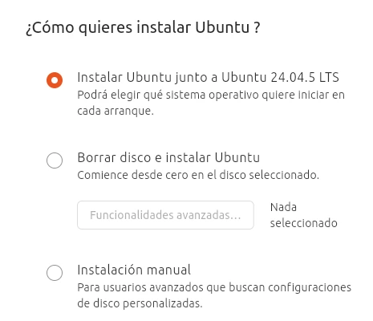
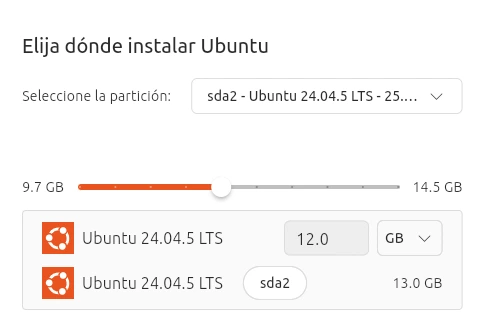
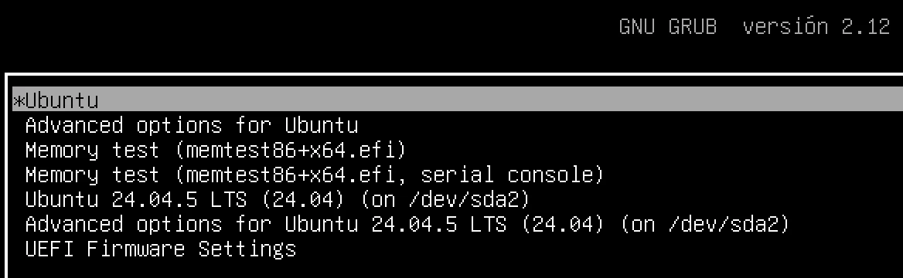
¿Qué orden fabrica el menú de GRUB después de cambiar /etc/default/grub?
Selecciona una opción.
El entorno gráfico
Del núcleo al escritorio
Servidor gráfico
Dibuja en la pantalla y recibe el teclado y el ratón. En Ubuntu, Wayland.
Entorno de escritorio
Paneles, menús, ventanas y aplicaciones básicas. En Ubuntu, GNOME.
Gestor de pantalla
La pantalla de inicio de sesión. En Ubuntu, gdm3.
Núcleo Linux
Wayland es el sustituto de X11, el servidor gráfico clásico de Unix y Linux. Ubuntu usa Wayland por defecto.
Son programas que funcionan encima del núcleo. Se pueden cambiar sin reinstalar el sistema.
Figura 4.39. Las piezas del entorno gráfico, encima del núcleo. Elaboración propia.
El entorno gráfico
Entornos de escritorio
Un sabor (del inglés flavour; también se dice versión) es una versión oficial de Ubuntu con otro escritorio.
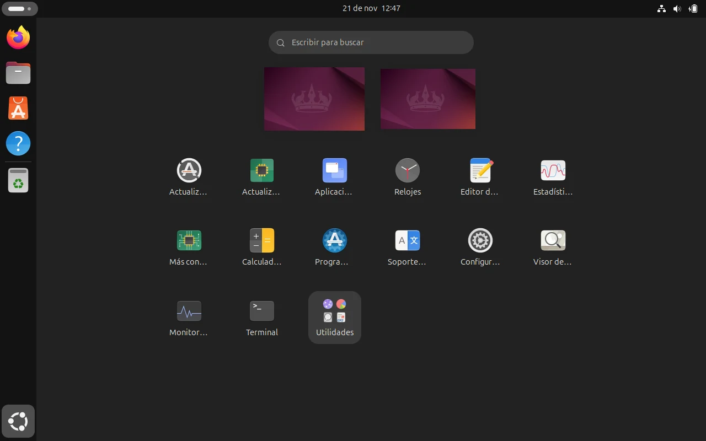
GNOME
Tiene una barra arriba y, al lado, un dock: la barra con los iconos de los programas.
Sabor de Ubuntu: el original
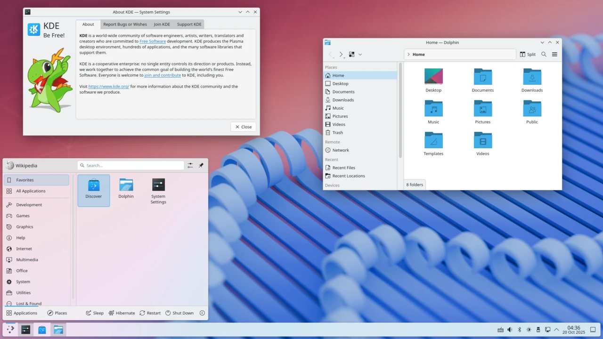
KDE Plasma
Es muy configurable; tiene el menú y la barra abajo.
Sabor de Ubuntu: Kubuntu
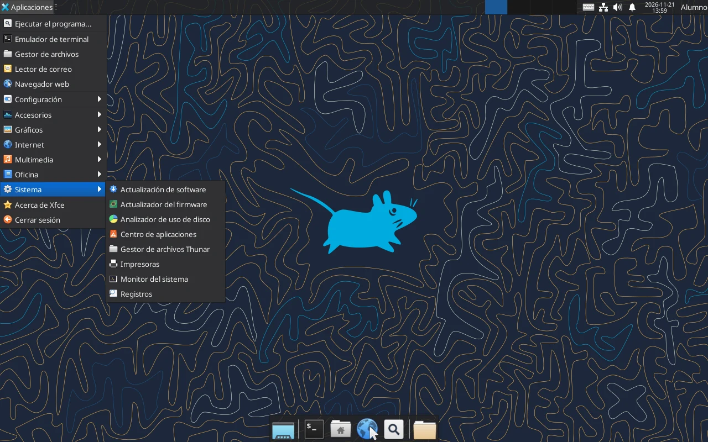
Xfce
Es ligero.
Sabor de Ubuntu: Xubuntu
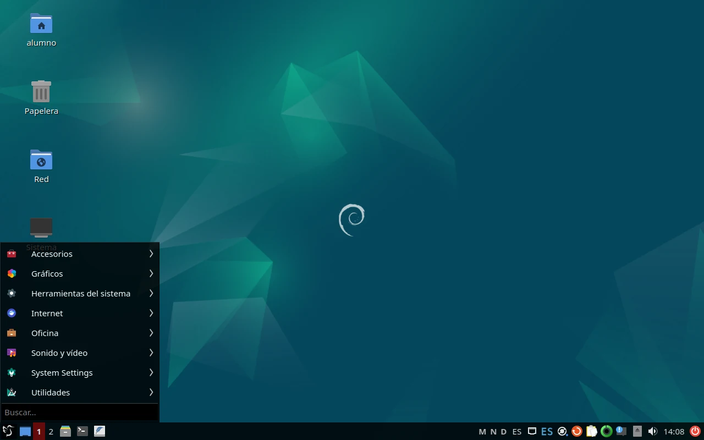
LXQt
Es muy ligero, para equipos antiguos.
Sabor de Ubuntu: Lubuntu
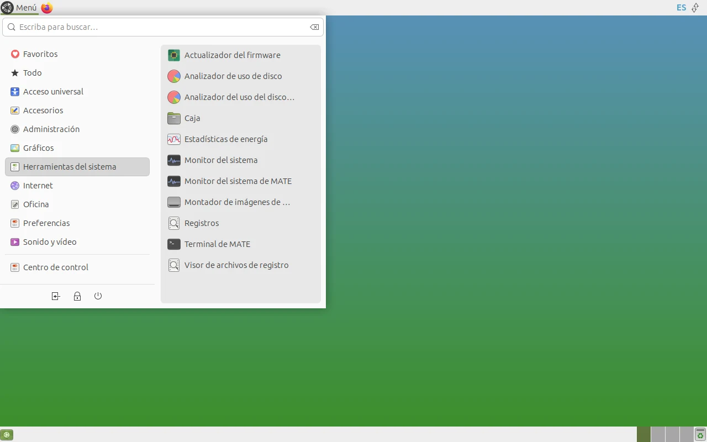
MATE
Tiene un aspecto clásico.
Sabor de Ubuntu: Ubuntu MATE
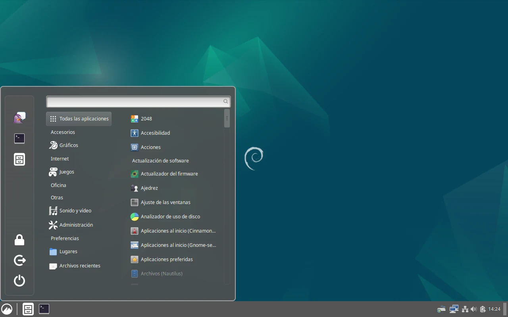
Cinnamon
Tiene un menú clásico abajo. Es también el escritorio de Linux Mint.
Sabor de Ubuntu: Ubuntu Cinnamon
Figura 4.40. Los seis escritorios. GNOME, el de Ubuntu 24.04. KDE Plasma 6, de Wikimedia Commons (en Ubuntu 24.04 se instala Plasma 5: la de la figura 4.44). Xfce, LXQt, MATE y Cinnamon, instalados sobre Ubuntu 24.04 con su aspecto original.
El entorno gráfico
¿Qué estás usando?
La sesión gráfica guarda en dos variables qué está usando.
- echo $XDG_SESSION_TYPEEl servidor gráfico: wayland.
- echo $XDG_CURRENT_DESKTOPEl escritorio: ubuntu:GNOME.
- systemctl status display-managerEl estado del gestor de pantalla: activo. El servicio se llama gdm y el paquete, gdm3. Sale con q.
Un servicio es un programa que funciona en segundo plano. systemctl status enseña si está en marcha.
- El servidor gráfico:
wayland. - El escritorio:
ubuntu:GNOME. - El estado del gestor de pantalla: activo. El servicio se llama
gdmy el paquete,gdm3. Sale conq. - q cierra la información y vuelve el prompt.
El entorno gráfico
Instalar KDE Plasma
- 1Apaga la máquina y haz una instantánea: Antes de KDE.
- 2Instala el escritorio: sudo apt install kubuntu-desktop. Descarga casi 1 GB, ocupa unos 2,5 GB en disco y tarda unos minutos.
- 3Te pregunta por el gestor de pantalla (la ventana lo llama «gestor de sesiones»): elige sddm, el de KDE.
- 4Reinicia. En la pantalla de inicio, elige la sesión Plasma.
- 5Para volver a GNOME tal como estaba: apaga y restaura la instantánea Antes de KDE.
Para cambiar de gestor de pantalla más tarde: sudo dpkg-reconfigure sddm.
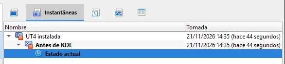
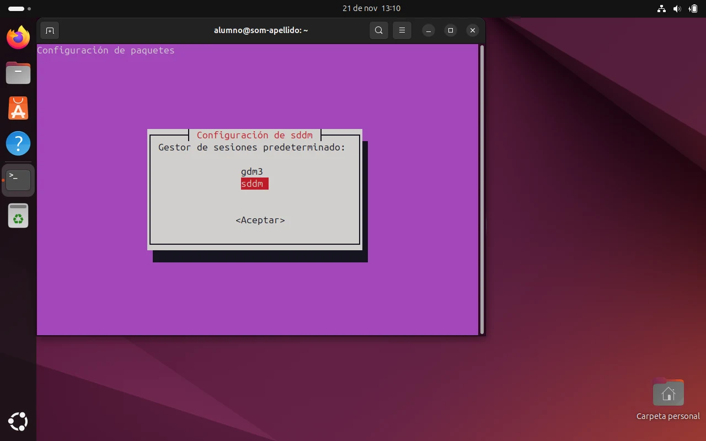
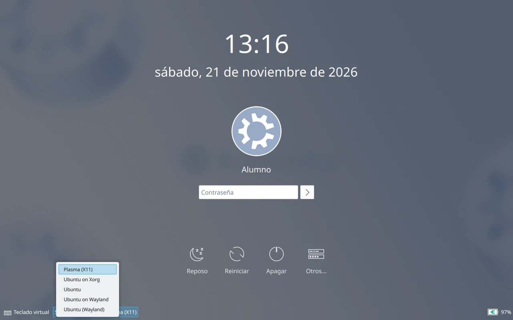
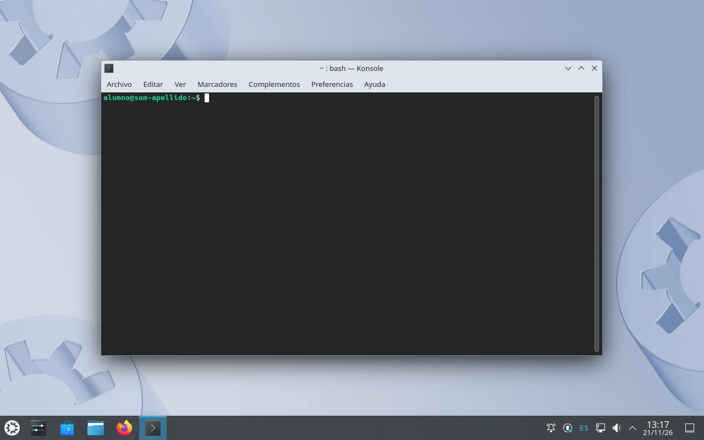
Pregunta a la clase
¿Qué escritorio le pondrías a un portátil antiguo con 4 GB de RAM?
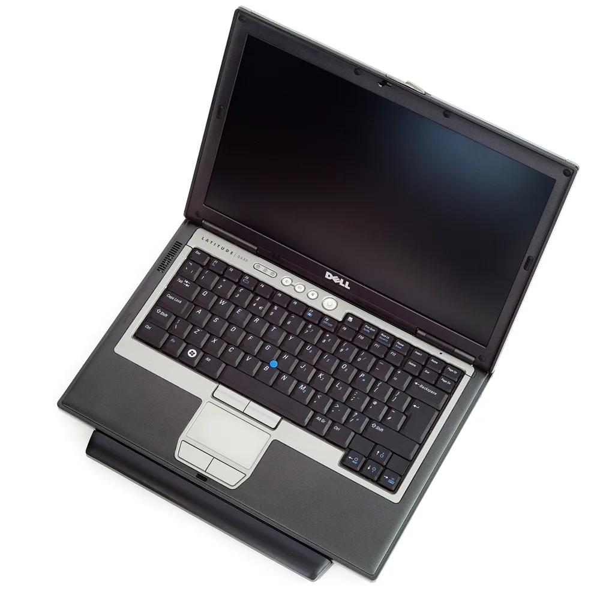
La respuesta
Uno ligero, como Xfce o LXQt. Con GNOME o KDE Plasma iría justo.
También se puede instalar directamente Xubuntu o Lubuntu, que ya los traen.
Escritorio y arranque
En tu Ubuntu-SOM:
Haz la instantánea Antes de KDE.
Instala KDE Plasma con sddm y entra en una sesión Plasma.
Comprueba con la terminal el escritorio y el gestor de pantalla.
Vuelve a la instantánea Antes de KDE.
Haz que el menú de GRUB se vea siempre y espere 5 segundos.
Reinicia y comprueba el menú.
Apunta tus incidencias.
Órdenes básicas
¿Quién soy y quién hay?
Un grupo reúne a varios usuarios para darles los mismos permisos.
- Tu nombre de usuario.
uid=1000: el primer usuario del sistema; el gruposudolo hace administrador.- Quién ha iniciado sesión y en qué terminal.
- Lo mismo, y qué está haciendo cada uno.
Órdenes básicas
Fecha y calendario
- dateLa fecha y la hora.
- date +%d-%m-%YCon + y un formato: %d día, %m mes, %Y año. Los demás, en date --help.
- date +%AEl día de la semana.
- calNo viene instalada. La terminal dice cómo instalarla.
- sudo apt install ncalInstala el paquete que trae cal.
- cal -3El mes anterior, el actual y el siguiente.
- cal -yEl año entero.
- cal 3 2027Un mes y un año concretos.
- cal -m 3En Ubuntu, -m pide un mes: marzo del año actual.
- La fecha y la hora.
- Con + y un formato: %d día, %m mes, %Y año. Los demás, en
date --help. - El día de la semana.
- No viene instalada. La terminal dice cómo instalarla.
- Instala el paquete que trae
cal. - Escribe la contraseña,
alumno. - Se instala el paquete.
- El mes anterior, el actual y el siguiente.
- El año entero.
- Un mes y un año concretos.
- En Ubuntu,
-mpide un mes: marzo del año actual.
Órdenes básicas
¿Dónde está un programa?
- which lsLa ruta del programa que se ejecuta: /usr/bin/ls.
- whereis lsEl programa y su página del manual.
- which cdNo responde nada: which solo mira en las carpetas de PATH, la lista de carpetas donde la shell busca los programas.
- type cdcd es una orden interna.
- La ruta del programa que se ejecuta:
/usr/bin/ls. - El programa y su página del manual.
- No responde nada:
whichsolo mira en las carpetas dePATH, la lista de carpetas donde la shell busca los programas. cdes una orden interna.
Órdenes básicas
Misión: quién, cuándo y dónde
Órdenes básicas
Moverse por las carpetas
- La raíz: la carpeta que lo contiene todo.
- Entra en una carpeta escribiendo su ruta.
- Sube a la carpeta de arriba.
- Vuelve a la carpeta anterior.
- Vuelve a tu carpeta personal.
- El punto es la carpeta actual: te deja donde estás.
Órdenes básicas
Las opciones de ls
ls carpeta lista otra carpeta sin entrar en ella: ls -l /etc.
Órdenes básicas
Leer una línea de ls -l
Órdenes básicas
Crear y ver archivos
- touch notas.txtCrea un archivo vacío. Si ya existe, le pone la fecha de ahora.
- ls -l notas.txtOcupa 0 bytes.
- cat /etc/hostnamecat enseña lo que tiene un archivo: el nombre del equipo.
- cat -n /etc/shellsCon -n, numera las líneas.
- more /etc/servicesPor páginas: espacio avanza, q sale.
- Crea un archivo vacío. Si ya existe, le pone la fecha de ahora.
- Ocupa 0 bytes.
catenseña lo que tiene un archivo: el nombre del equipo.- Con
-n, numera las líneas. - Por páginas.
- Espacio avanza.
- q sale.
Órdenes básicas
Otras órdenes del día a día
Órdenes básicas
Misión: archivos y carpetas
Órdenes básicas
Variables de la terminal
Una variable guarda un dato con un nombre. Con $ delante, la shell pone su valor.
- echo $HOMETu carpeta personal.
- echo $PWDLa carpeta donde estás.
- echo $PATHLas carpetas donde la shell busca los programas, separadas por dos puntos.
- envTodas las variables.
- env | grep HOMESolo la línea que buscas.
- PS1="> "Cambia el prompt hasta que cierres la terminal.
- Tu carpeta personal.
- La carpeta donde estás.
- Las carpetas donde la shell busca los programas, separadas por dos puntos.
- Todas las variables.
- Solo la línea que buscas.
- Cambia el prompt hasta que cierres la terminal.
Órdenes básicas
Alias e historial
Un alias es un nombre corto para una orden más larga.
- aliasLos alias que ya trae Ubuntu.
- alias quien='clear; whoami; date'Crea el alias quien.
- quienEjecuta las tres órdenes.
- unalias quienLo borra.
- historyTodas las órdenes que has escrito, numeradas.
- history -cBorra el historial.
Los alias que creas así duran hasta que cierras la terminal.
- Los alias que ya trae Ubuntu.
- Crea el alias
quien. - Ejecuta las tres órdenes.
- Lo borra.
- Todas las órdenes que has escrito, numeradas.
- Borra el historial.
Órdenes básicas
Misión: tu terminal a tu gusto
Test masivo en clase
Preguntas de toda la unidad, en takataka.io.
Examen de la unidad
Unidad 4
Tus comandos
Teclas
Ayuda
Moverse y mirar
Archivos
Quién y cuándo
Red
El sistema
La shell
¿Dónde está?
Administrar
Escritorio
La hoja de comandos completa, con un ejemplo de cada uno, está en linux/comandos.html.
Unidad 4
Resumen (1 de 2): Linux y la terminal
Linux
Linux es un núcleo libre de tipo Unix; con las herramientas GNU forma el sistema GNU/Linux.
Linux
La GPL obliga a repartir los cambios con la misma licencia y con su código.
Linux
Sus piezas son el hardware, el núcleo, la shell y las aplicaciones.
La terminal
Una orden tiene opciones y argumentos; la sinopsis dice cómo se escribe.
La terminal
La ayuda está en el sistema: --help, man, man -k, help y type.
El núcleo
El núcleo de Linux es monolítico y modular.
Distribuciones
Una distribución junta el núcleo, las herramientas y los programas; Ubuntu publica una LTS cada dos años.
Unidad 4
Resumen (2 de 2): instalar y arrancar
Planificar
Antes de instalar se comprueba el equipo y se escribe un plan.
Planificar
Ubuntu-SOM tiene cuatro particiones: ESP, raíz, intercambio y /home.
Instalar
Ubuntu se instala desde un USB grabado con la ISO; en una máquina virtual, la ISO hace de USB.
Instalar
Una incidencia se apunta: qué pasó, qué hiciste y cómo acabó.
Instalar
Instalar las actualizaciones no cambia de versión; pasar de la 24.04 a la 26.04 es otra cosa, aunque Ubuntu también lo llame actualizar.
Arrancar
GRUB carga el núcleo; su configuración está en /etc/default/grub y se aplica con update-grub.
Entorno gráfico
El servidor gráfico, el escritorio y el gestor de pantalla se pueden cambiar sin reinstalar.
Órdenes básicas
Con cd y una ruta te mueves por las carpetas; which dice dónde está un programa y un alias acorta una orden.

Fin de la UT4
Linux: instalación de Ubuntu